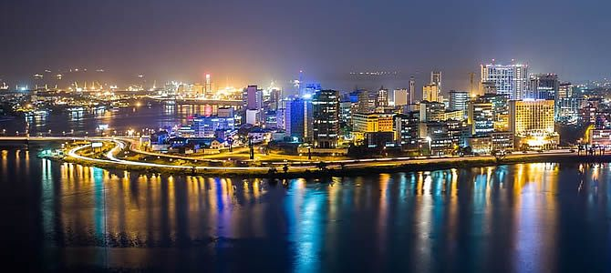

This Article will represent a short story of my educational journey, from where everything began to where it is going.
Most of the informations on this website are accurate and verified, but also edited in the purpose of this assignment.
"WELCOME TO MY WORLD !!!"
ROAD TO BECOME A GREAT PERSON !!
Abidjan ivory coast

Fig.1 - Abidjan,Ivory coast
born and raised in a west African country, Abidjan, in The IVORY COAST, i can describe my childhood as one one the greatest moment spent in my life were i had to opportunity to get quality education from school but also from home.
most if not all of my elementary till high school was spent in a school called INSTITUT SCHOLAIRE LAVOISIER, where i spent the happiest moment so far.
Being a college student in Africa....
Fig.2 - University of Cocody Abidjan
After graduating from high School, I had the chance to attend The University Cocody In Abidjan, where i first learned the basics of computer science and Applied Math, , which i immediately fell in love with.
living in a different country
Fig.3 - University of Legon, Ghana
Two years of college were enough for me to adapt in the college environment before my parents and I decided to take a new adventure a travel abroad to further my education. It was time for me to go to a neighboor cuntry, Accra Ghana where i first got familiar with basics of the Engish language and wnated to take it a little further by applying for the US VISA.
flighing to the united States first American college experience
Fig.3 - University of New Orlean, Louisiana
flighing to the UNITED STATES OF AMERICA has been both a cultural and emotional shock , especially adapting to the new system, the weather and all that goes with it.Thnks to GOD and to my ability to quickly adapt i was able to mingle and got admitted to the university of NEW Orleans for a semester and ended up moving to saint Louis Missouri wher i spent 3 years at the saint louis community college getting my associate degree.
current stage and where i am seeing myself in the upcoming Years
In order to challenge myself and become a better version of my person, i am currently learning a new skill and firmly believe will end up with a job that i deserve and always dreamed of.
I might not know where this new adventure is taking me to, but i will always remember where i come from...